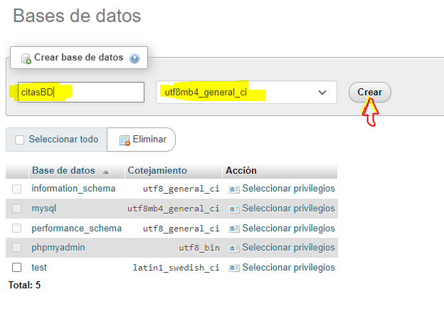
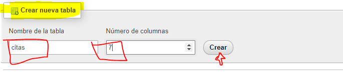
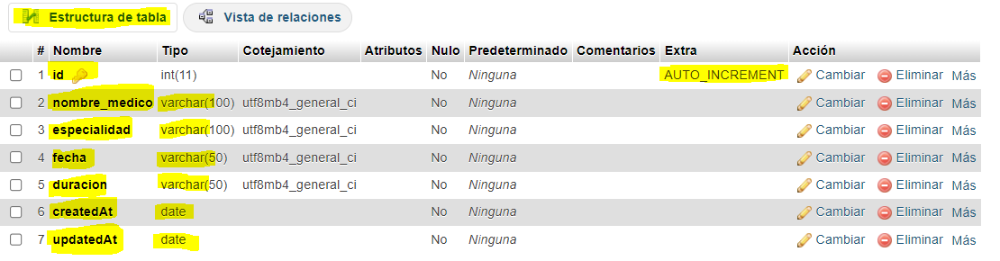
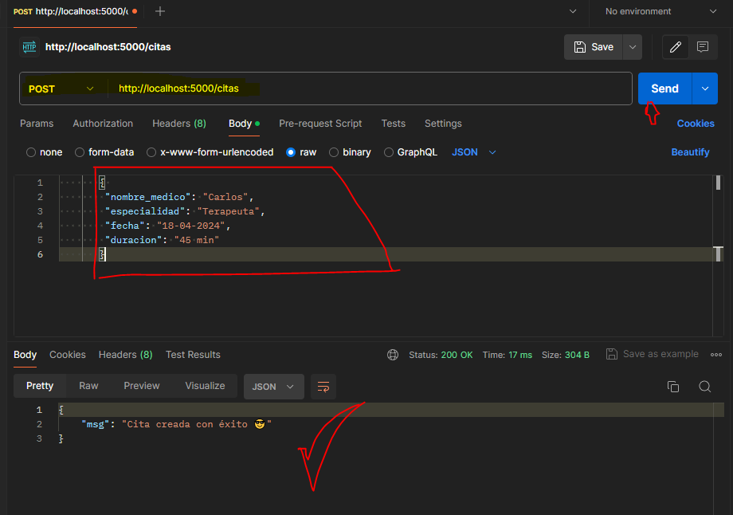

CRUD / Express y MySql - Parte 1
En esta cuarta parte vamos a realizar otro CRUD(Create, Read, Update, Delete) esta vez con una base de datos relacional. Antes habíamos creado nuestro proyecto con una base de datos no relacional como lo era MongoDb, ahora trabajaremos con un gestor MySql en este caso usaremos Xampp.
Primero creamos nuestro directorio backend-mysql e iniciamos un nuevo proyecto node.js y descargamos las siguientes dependencias:
Instalación de dependencias
npm init -y
npm i express
npm i cors sequelize mysql2
npm i nodemon -D
Mira la documentación de sequelize aquí
En este proyecto no trabajamos con REQUIRE trabajaremos con módulos, para ello modifica nuestra package.json, este debe quedar de la siguiente manera:
package.json.js
{
"name": "backend-mysql",
"version": "1.0.0",
"description": "",
"main": "index.js",
"type": "module", // le especificamos que vamos a trabajar con Módulos y no con require
"scripts": {
"start": "nodemon src/index.js" // Modificamos para que inicie nuestra app con nodemon desde nuestra ruta src/index.js
},
"keywords": [],
"author": "",
"license": "ISC",
"dependencies": {
"cors": "^2.8.5",
"express": "^4.19.2",
"mysql2": "^3.9.6",
"sequelize": "^6.37.3"
},
"devDependencies": {
"nodemon": "^3.1.0"
}
}
Creación de base de datos relacional
En Xampp crea una nueva base de tatos llamada citasDB
Crea una nueva tabla llamada citas
Verifica que los 7 campos queden con la siguiente configuración:
Crea el primer registro
MySql
INSERT INTO `citas`(
`nombre_medico`,
`especialidad`,
`fecha`,
`duracion`)
VALUES (
'Julio Amaya',
'Medico General',
'18-04-2024',
'30 min')
IMPORTANTE! 'Sequelize' en su documentación nos recomienda que creemos dos campos adicionales en nuestra base de datos:
'createdAt' y 'updatedAt' de tipo 'date'. Para que no se generen errores en Xampp debes omitir esos dos campos y adicional omitir el campo de ID, por esta razón de los 7 campos de la tabla solo debes ingresar datos a 4 campos.
Estructura de carpetas
Ahora creamos los directorios y archivos necesarios para conectarnos y trabajar con nuestra base de datos
estructura de carpetas
↓ config// New
dg.js// New
↓ controllers// New
CitasController.js// New
↓ models// New
Citas.js// New
→ node_modules
↓ routes// New
RouterCitas.js// New
↓ src// New
index.js// New
package-lock.json
package.json
Iniciando CRUD
En esta parte se inicia con el Crud, definiendo algunas rutas, conexión a la base de datos y creación de nuestro primer método para agregar citas a nuestra base de datos relacional, ten presente que el modelo no contine dos campos que en la base dedatos definimos inicialmente, esto por que son campos que funcionan con Sequelize y el automáticamente se encarga de su gestión, por lo que nosotros no debemos no debemos tocarlos.
Nuestra configuración de momento queda definida de la siguiente manera:
config/db.js
config/db.js
// config/db.js
import { Sequelize } from "sequelize";
const BD = new Sequelize('citasbd', 'root', '',{
host:'localhost',
dialect: 'mysql'
})
export default BD;
model/Citas.js
model/Citas.js
// model/Citas.js
// Importamos la conexión a la BD
import BD from "../config/db.js";
import { DataTypes } from "sequelize";
const Citas = BD.define('citas', {
nombre_medico :
{
type: DataTypes.STRING,
allowNull:false
},
especialidad :
{
type: DataTypes.STRING,
allowNull:false
},
fecha:
{
type: DataTypes.STRING,
allowNull:false
},
duracion :
{
type: DataTypes.STRING,
allowNull:false
},
});
export default Citas;
controller/CitasController.js
controller/CitasController.js
// controller/CitasController.js
// Importamos el modelo
import Citas from '../model/Citas.js';
// Creamos los métodos CRUD
// Creamos una función para agregar citas
export const agregarCitas = async (req, res) => {
try {
await Citas.create(req.body)
res.json({msg: "Cita creada con éxito 😎"});
} catch (error) {
res.json ({msg: error.message});
}
}
routes/RoutesCitas.js
routes/RoutesCitas.js
// routes/RoutesCitas.js
// Importamos express
import express from 'express';
// Importamos nuestro controlador
import {agregarCitas} from '../controller/CitasController.js';
const router = express.Router();
router.post('/', agregarCitas);
export default router;
src/index.js
src/index.js
// src/index.js
import express from "express";
import cors from "cors";
// Importamos la configuración de la BD
import BD from '../config/db.js';
// Importamos el archivo de las rutas
import citasRoutes from '../routes/RoutesCitas.js';
// Definimos la variable para trabajar con Express
const app = express();
app.use(cors());
app.use(express.json());
app.use('/citas', citasRoutes );
// Autenticación BD
try {
await BD.authenticate();
console.log('Connection has been established successfully.');
} catch (error) {
console.error('Unable to connect to the database:', error);
}
// Muestra mensaje en el navegador
app.get('/', (req, res) => {
res.send("Hola mundo");
})
// Configuración del puerto del servidor
app.listen(5000, () => {
console.log("El servidor esta corriendo ⚡ en http://localhost:5000/")
});
Comprobación del método 'agregarCitas'
